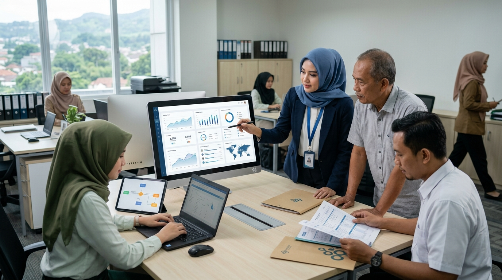
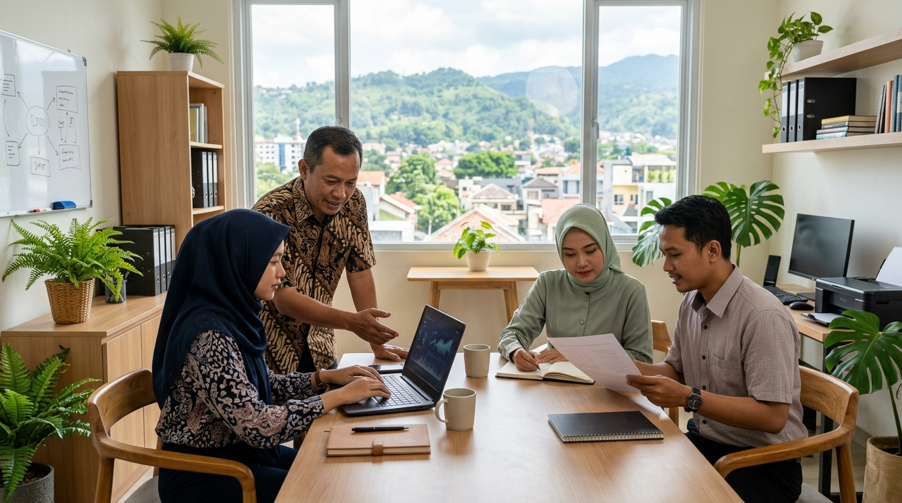

Kurangi pencatatan berulang
Informasi dicatat pada kegiatan asalnya sehingga data yang sama tidak perlu dicatat berkali-kali.
Kelola koperasi dengan lebih menyeluruh melalui proses kerja dan informasi yang saling terhubung.

Data anggota, simpanan, pinjaman, kegiatan usaha, dan keuangan kerap dikelola secara terpisah. AKPRO+ membantu menghubungkan proses tersebut agar kegiatan lebih mudah ditelusuri dan informasinya lebih mudah dipahami.
Kenali Fitur AKPRO+ ↗Berbagai kebutuhan koperasi terhubung melalui aktivitas dan sumber informasi yang jelas.
Informasi dicatat pada kegiatan asalnya sehingga data yang sama tidak perlu dicatat berkali-kali.
Keterkaitan antara transaksi dan prosesnya membantu peninjauan oleh pihak yang berwenang.
Kegiatan operasional mendukung penyajian informasi keuangan dan laporan secara konsisten.

Pengurus, pengelola, petugas, dan pengawas membutuhkan informasi yang sesuai tanggung jawabnya. Pengaturan akses dan aktivitas membantu setiap pihak bekerja dengan lebih terarah.
Sampaikan Kebutuhan Anda ↗